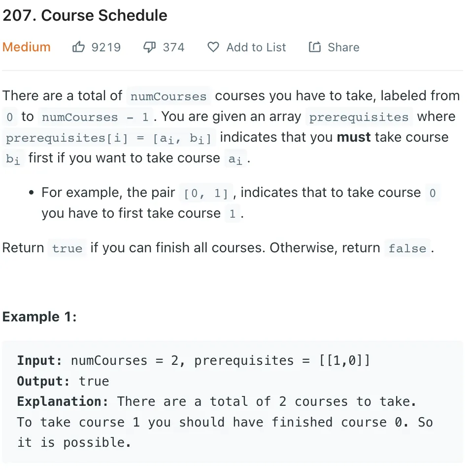
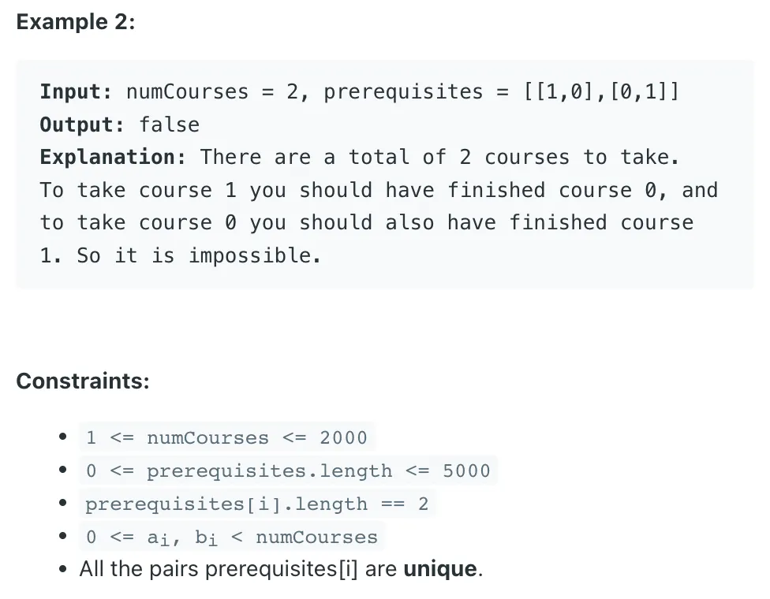

207. Course Schedule
考過的公司：Amazon、Bytedance、Google、tiktok
Question


✍🏽 My Solution
Runtime: 7 ms, faster than 61.99% of Java online submissions for Course Schedule.
Memory Usage: 47.9 MB, less than 55.84% of Java online submissions for Course Schedule.
class Solution {
public boolean canFinish(int numCourses, int[][] prerequisites) {
List<Integer>[] graph = new ArrayList[numCourses];
int[] inDegree = new int[numCourses];
for (int[] edge : prerequisites) {
if (graph[edge[1]] == null) graph[edge[1]] = new ArrayList<>();
inDegree[edge[0]]++;
graph[edge[1]].add(edge[0]);
}
Queue<Integer> queue = new LinkedList<>();
for (int i = 0; i < numCourses; i++) {
if (inDegree[i] == 0) queue.offer(i);
}
while (!queue.isEmpty()) {
Integer e = queue.poll();
numCourses--;
if (graph[e] == null) {
continue;
}
for (int i : graph[e]) {
if (--inDegree[i] == 0) queue.offer(i);
}
}
return numCourses == 0;
}
}
🧠 Thought Process
-
Why did I choose this particular implementation?
- 方法一：入度表（廣度優先遍歷） 算法流程： 1.統計課程安排圖中每個節點的入度，生成 入度表 indegrees。 2.借助一個隊列 queue，將所有入度為 0 的節點入隊。 3.當 queue 非空時，依次將隊首節點出隊，在課程安排圖中刪除此節點 pre：
- 並不是真正從鄰接表中刪除此節點 pre，而是將此節點對應所有鄰接節點 cur 的入度 -1，即 indegrees[cur] -= 1。
- 當入度 -1−1後鄰接節點 cur 的入度為 00，說明 cur 所有的前驅節點已經被 “刪除”，此時將 cur 入隊。 4.在每次 pre 出隊時，執行 numCourses--；
- 若整個課程安排圖是有向無環圖（即可以安排），則所有節點一定都入隊並出隊過，即完成拓撲排序。換個角度說，若課程安排圖中存在環，一定有節點的入度始終不為 0。
- 因此，拓撲排序出隊次數等於課程個數，返回 numCourses == 0 判斷課程是否可以成功安排。
復雜度分析：
- 時間復雜度 O(N + M)： 遍歷一個圖需要訪問所有節點和所有臨邊，N 和 M 分別為節點數量和臨邊數量；
- 空間復雜度 O(N + M)： 為建立鄰接表所需額外空間，adjacency 長度為 N ，並存儲 M 條臨邊的數據。 /*
- 這個問題相當於在先決條件表示的有向圖中檢測一個循環。 BFS 和 DFS 都可以利用拓撲排序的思想來解決它。
- 由於 pair
- BFS 使用每個節點的入度。我們將首先嘗試找到一個度數為 0 的節點。
- 如果我們不這樣做，則圖中一定有一個循環，我們返回 false。否則，我們將其入度設置為 -1 以防止再次訪問它並將其鄰居的入度減少 1。此過程將重複 n（節點數）次。 */